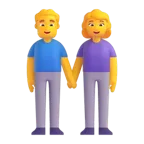

My English World
Book 5 · Think & Say
Unit 1
At the Park
Tap any picture or sentence to listen.
🔍 Look and think
Q
How many trees can you see?
A
I can see two trees.
Q
What colour is Sara's top?
A
It's yellow.
Q
Is there a bird?
A
Yes, there is.
Q
What's on the grass?
A
A ball.
Q
What colour is Omar's T-shirt?
A
It's green.
Q
Are there any clouds?
A
Yes, there are.
▶ Play all
🗣️ Talk about the picture
This is a park.
🔊
There are two trees.
🔊
There is a ball on the grass.
🔊
Sara and Omar are friends.
🔊
They are in the park.
🔊
They are happy.
🔊
▶ Play all sentences
🧩 Sentence patterns
There is a ___.
There is a ball.
🔊
There is a bird.
🔊
There is a flower.
🔊
There is a cloud.
🔊
▶ Play pattern 1
There are two ___.
There are two trees.
🔊
There are two clouds.
🔊

There are two children.
🔊
There are two flowers.
🔊
▶ Play pattern 2
All units
In the Classroom ›